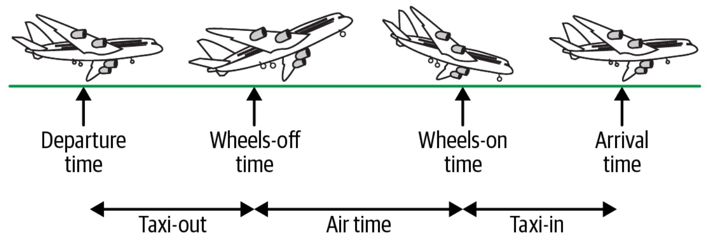

Google Cloud Console
Хмарні технології обробки даних
Вимоги
Створіть обліковий запис на Google Cloud Platform (безкоштовно)
Наступні інструкції є важливими, тому, будь ласка, уважно прочитайте їх.
- Підпишіться на [3-місячну ($300+$100 кредит) безкоштовну пробну версію] (https://console.cloud.google.com/freetrial) Google Cloud Platform (GCP). Для цього потрібен наявний обліковий запис Google/Gmail1. Під час реєстрації вам буде запропоновано ввести дані кредитної картки для виставлення рахунку. Не хвилюйтеся, з вас не стягуватимуться кошти доти, доки ви не зробите активний запит на продовження доступу до GCP після завершення безкоштовної пробної версії. Але для отримання доступу до платформи необхідно мати ідентифікатор проекту, який підлягає оплаті.
- (Опціонально) Завантажте та дотримуйтесь інструкцій з встановлення утиліти командного рядка Google Cloud SDK
gcloud.
Вступ
До хмари!
Найпростіший і найдешевший спосіб отримати доступ до більших обчислювальних потужностей сьогодні - це хмара2. Хоча є багато чудових постачальників хмарних послуг, я зосереджуся на Google Cloud Platform (GCP)3. GCP пропонує низку неймовірно корисних сервісів, про деякі з яких ми розповімо в наступних лекціях, а 3-місячна безкоштовна пробна версія є ідеальною відправною точкою для вивчення хмарних обчислень.
Початок роботи
- Увійдіть в Google Cloud Console.
- Виберіть або створіть проект.
- Відкрийте Cloud Shell4.
- Введіть команду для копіювання файлів з цього репозиторію:
git clone https://github.com/aranaur/data-science-on-gcp
cd data-science-on-gcpДослідження даних на GCP
Дані
В якості даних будемо використовувати Airline On-Time Performance Data.
Усі великі авіаперевізники США зобов’язані подавати статистичні дані про кожен свій внутрішній рейс до Служби транспортної безпеки (BTS).
Дані, які вони зобов’язані подавати, включають запланований час вильоту та прибуття, а також фактичний час вильоту та прибуття. На основі запланованого та фактичного часу прибуття можна розрахувати затримку прибуття, пов’язану з кожним рейсом.
Фактичний час вильоту і прибуття визначається досить точно, виходячи з того, коли відпускається стоянкове гальмо літака і коли воно знову вмикається в пункті призначення. Правила навіть визначають, що станеться, якщо пілот забуде увімкнути стоянкове гальмо - в такому випадку замість нього використовується час закриття або відкриття пасажирських дверей.

Змінні
Датасет містить понад 100 змінних, але ми використаємо лише деякі з них:
| Змінна | Опис |
|---|---|
FlightDate |
Дата польоту (yyyymmdd) |
Reporting_Airline |
Унікальний код оператора. Якщо один і той самий код використовувався кількома перевізниками, для більш ранніх користувачів використовується цифровий суфікс, наприклад, PA, PA(1), PA(2). Використовуйте це поле для аналізу за різні роки. |
Origin |
Аеропорт вильоту |
Dest |
Аеропорт призначення |
CRSDepTime |
Час відправлення комп’ютерної системи бронювання (CRS) (місцевий час: hhmm) |
DepTime |
Фактичний час відправлення (місцевий час: hhmm) |
DepDelay |
Різниця в хвилинах між запланованим і фактичним часом відправлення. Ранні відправлення показують від’ємні числа. |
TaxiOut |
Тривалість таксі-ауту, в хвилинах |
WheelsOff |
Час висадки (місцевий час: hhmm) |
WheelsOn |
Час відправлення (місцевий час: hhmm) |
TaxiIn |
Тривалість таксі (хвилини) |
CRSArrTime |
Час прибуття CRS (місцевий час: hhmm) |
ArrTime |
Фактичний час прибуття (місцевий час: hhmm) |
ArrDelay |
Різниця в хвилинах між запланованим і фактичним часом прибуття. Ранні прибуття показують від’ємні значення. |
Cancelled |
Індикатор скасованого польоту (1 = Так) |
CancellationCode |
Причину скасування |
Diverted |
Індикатор відхиленого польоту (1 = Так) |
Distance |
Відстань між аеропортами (милі) |
Весь перелік змінних доступний за посиланням https://www.transtats.bts.gov/Fields.asp?gnoyr_VQ=FGJ.
Завантаження
За допомогою інструмента розробника браузера подивимось куди звертається веб-сайт, коли ми вводимо запит на завантаження даних.
Перейдіть за посиланням <> та оберіть опцію “Prezipped File”.
Відкрийте вкладку “Network” в інструментах розробника браузера та введіть запит на завантаження даних.
Ми побачимо, що відбувається запит до https://transtats.bts.gov/PREZIP/On_Time_Reporting_Carrier_On_Time_Performance_1987_present_2023_1.zip.
Видно, з чого складається шаблон запиту:
${Базовий_рік}_${Рік}_${Місяць}.zipСпробуємо з командного рядка:
BTS=https://transtats.bts.gov/PREZIP
BASEURL="${BTS}/On_Time_Reporting_Carrier_On_Time_Performance_1987_present"
YEAR=2015
MONTH=3
curl -k -o temp.zip ${BASEURL}_${YEAR}_${MONTH}.zipcurl- це утиліта командного рядка для взаємодії з серверами за допомогою різних протоколів. В даному випадку ми використовуємо протокол HTTP.-kвказує на те, що ми дозволяємоcurlвикористовувати незахищене з’єднання.-oвказує на те, що ми хочемо зберегти результат у файлtemp.zip.
Розпакуємо архів:
unzip temp.zipТепер видно, що у середині архіву знаходиться CSV-файл. Подивимось на перші кілька рядків:
head -n 5 *.csvЗамість того, щоб назвати завантажений файл temp.zip, давайте назвемо його 201503.zip і помістимо у тимчасовий каталог. Щоб замінити місяць 3 на 03, ми можемо скористатися командою printf у bash:
MONTH2=$(printf "%02d" $MONTH)Для створення каталогу використаємо команду mkdir:
TMPDIR=$(mktemp -d)Тепер для завантаження даних використаємо команду curl:
ZIPFILE=${TMPDIR}/${YEAR}_${MONTH2}.zip
curl -o $ZIPFILE ${BASEURL}_${YEAR}_${MONTH}.zipТепер ми можемо розархівувати файл, витягти CSV-файл до поточного каталогу (./) і видалити решту вмісту ZIP-файлу:
unzip -d $TMPDIR $ZIPFILE
mv $TMPDIR/*.csv ./${YEAR}${MONTH2}.csv
rm -rf $TMPDIRВсі попередні команди містяться у файлі під назвою download.sh, а потім у скрипті ingest.sh викликаємо їх з циклу for:
for MONTH in `seq 1 12`; do
bask download.sh $YEAR $MONTH
doneВиконаємо скрипт:
for MONTH in `seq 1 12`; do bash ../02_ingest/download.sh 2015 $MONTH; doneПодивимось на кількість рядків у файлах:
wc -l *.csvЗавантаження даних у Google Cloud Storage
Тепер, коли ми завантажили дані, давайте завантажимо їх у Google Cloud Storage (GCS). Це дозволить нам використовувати їх у інших сервісах GCP, таких як BigQuery, Dataflow, Dataproc, AI Platform тощо.
Спочатку треба створити новий бакет - це контейнер для зберігання даних з унікальним іменем.
Ви можете створити унікальне бакет в командному рядку за допомогою:
PROJECT=$(gcloud config get-value project)
BUCKET=${PROJECT}-dsongcp
REGION=us-central1 # Дивіться https://cloud.google.com/storage/docs/locations
gsutil mb -l $REGION gs://$BUCKETТепер, коли бакет створено, ми можемо завантажити файли у нього:
gsutil -m cp *.csv gs://fit-cloud-course-dsongcp/flights/raw/BigQuery
Примітки
Якщо у вас є кілька облікових записів Gmail, виберіть один і постійно використовуйте його, коли з’являється запит на автентифікацію нового API сервісу GCP↩︎
Хоча хмара - це не єдина гра в місті, вона пропонує безліч переваг, які, на мою думку, роблять її безпроблемною для більшості людей: економія на масштабах робить її набагато дешевшою; турботи про обслуговування та амортизацію зняті; доступ не залежить від інституційної приналежності або статусу викладача; хмарні провайдери пропонують безліч інших корисних послуг; тощо↩︎
Альтернативи GCP включають AWS та Digital Ocean. Posit нещодавно також запустила власний хмарний сервіс: Posit Cloud, який має вужчу спрямованість, але чудово підходить для навчання і є (наразі) безкоштовним для використання. Хороша новина полягає в тому, що це все чудові варіанти, а загальні принципи хмарних обчислень переносяться дуже легко. Тож використовуйте те, що вам зручніше↩︎
Cloud Shell - це мікро-ВМ, яка існує протягом усього часу, поки відкрито вікно браузера, і надає вам термінальний доступ до мікро-ВМ. Закрийте вікно браузера, і мікро-ВМ зникне. ВМ Cloud Shell безкоштовна і постачається з багатьма інструментами, які знадобляться розробникам на Google Cloud Platform. Наприклад, на ній встановлені Python, Git, Google Cloud SDK та Orion (веб-редактор коду). Хоча віртуальна машина Cloud Shell є ефемерною, вона прикріплена до постійного диска, який прив’язаний до вашого облікового запису користувача. Файли, які ви зберігаєте в домашньому каталозі, зберігаються під час різних сеансів Cloud Shell.↩︎